Table of Contents
- Tornado Damage and How we Rate Tornadoes
- Fujita vs. Enhanced Fujita
- Classes of Damage (US)
- Classes of Damage (Canada)
Tornado Damage and How we Rate Tornadoes
Recording and classifying tornadoes by their intensity seems easy at first. just record the winds and assort them by winds right? Sadly, its not as simple as that, as recording the winds its much harder than you would think. You might say "well why not get a sensor to be placed in the tornado?", and I wouldn't blame you for thinking this way. But usually, the sensor we would use, an anemometer, would get blown into pieces, in most cases, before we would record any useful data (however theres been cases where they have recorded crazy high winds without breaking, but this is pretty rare). Thats before we event get into the logistical nightmare of trying to put these sensors into every tornado, which simply isnt possible, for example, what about the tornadoes in South Eastern Texas, where theres just bob's road and its barely passable on a good day.
What about alternative means of measureing winds you might ask, and yes there is one, using Mobile radars. Some government agencies, and universities, own and operate doppler radar on vehicles, and typically use this for research, some with the benefit of sharing the radar data live to the public. But these are few and far between, and are rarely seen. Putting one of these on every single storm would both cost an insane amount of money, and would also be logistically challenging.
So How do we Rate Tornadoes?
We know that all (with a few exceptions) tornadoes leave behind some sort of damage, from broken tree limbs to houses being removed from their foundations. Lukcily, we can use the damage tornadoes have left behind to record, classify, and rate them. We have been doing this all the way since the early 1970's, although the rating system they used back then was first created in the 1950's, more on that later on. Since damage is, for the most part, a consistant thing all tornadoes do, we can use that to rank tornadoes.
So how do they do this? Surveyors (the people employed by government agencies) go out to impacted areas and record and assess the damage. By using documentation on the damage scales they use, they can infer windspeeds through the damage (whichw as done before hand and used some complex equations) and can create preliminary (basic or "first draft" assessments) of the damage. Usually after they record all the damage they can (nowadays, through photos, and brief descriptions, and memory) they go back to their offices to get more in depth with the damage. Once they go through all the damage, they create a final assessment, and is usually the final rating, althought sometimes they do go back and "reassess" the damage.
In addition to all of this, different countries use different scales, most countries use the older Fujita scale, or a scale based on the fujita scale, like the TORRO scale, although some countries do use the Enhanced Fujita Scale, like the United states, or use tweaked EF scales, like the Canadian Enhanced Fujita Scale (CEF) which is essentially the same, but with a few minor additions and changes to better suit our buildings. The Japanese also use a variation of the EF scale, known as the JEF scale, or Japanese Enhanced Fujita scale, which the Chineese "Unofficially" use.
Fujita vs. Enhanced Fujita
In north America, we use the Enhanced Fujita scale, and previously the Fujita scale. Both of these scales are Damage Scales, meaning they rate the tornadoes based on damage, not windspeeds. Now, they do have estimated windspeeds, but this is calculated on the damage done, not the winds recorded, hence why you might sometimes see tornadoes rated weakly, but we know that the windspeeds inside the tornado were strong/violent. One of the most known examples is the El-reno EF3, which was rated EF5 at one point, due to the winds recorded by a doppler radar, with estimated winds over 300mph, which would put it over the 201mph threshold of an EF5 rating, but when they surveyed the damage, they couldn't find any that would back up an EF5 rating, only damage that can represent an EF3 rating, which has winds estimated between 135mph and 165mph.
Even today, most people do not know the difference between the Fujita and Enhanced Fujita scales, and often mix up the two. One of the major differences is the estimated wind speeds. On the older Fujita scale, the windspeeds were over estimated, meaning a tornado with F3 level windspeeds was able to do F5 level damage, this was later changed in the new scale. One of the other major differences is the Damage Indicator's. the old scale was very generalized, and didn't account for building quality (some houses being built solidly, where others cut corners), and in the new scale, these were all accounted for, aswell as including different kinds of buildings, descriptions and generally better descriptions of damage.
Classes of Damage (United States)
Currently, the EF scale has 7 Different classifications, EFU and EF0 through EF5. In addition, it also has a Thunderstorm Damage classification, which is usually used in Linear wind events, or in particularly strong RFD damage.
Damage Indicators (DI's) and Degrees of Damage (DOD)
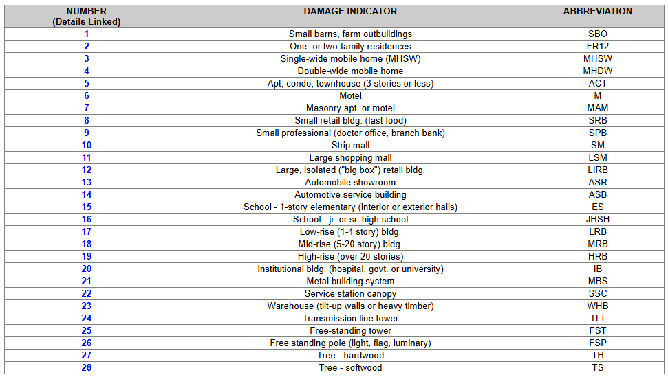
Above is a table of all the Damage Indicators, or DI's, table taken from weather.gov's site on the EF scale. In total, there are 28 Di's, ranging from family homes, to skyrises and even trees. Each one of these DI's has a Degree of Damage, or DOD, where by using a brief description of the damage observed, and by infering the construction quality (this is where the controversy starts, since it can differ so much between each person), they can use the estimated windspeeds to conclude the rating on the EF scale. Lets use an example.
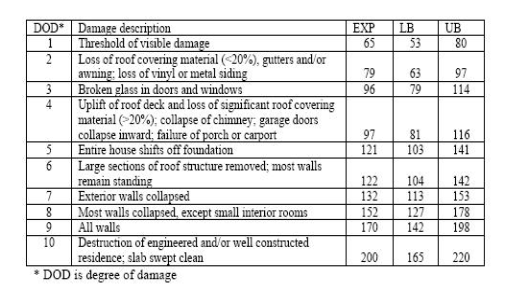
On the image to the left is the DOD table for the One and Two Family Residences (FR12) DI. Here we can see the DOD, or level of damage, based on consecutive integers (not all DI's have 10 DOD's), and then the brief description of the damage. But then what is the columns to the right? Thats the building's construction quality. EXP stands for the EXPected rating, or what the typical construction in the US should look like (this is different in other countries), the LB stands for Lower-Bound, or the construction quality is worse than whats typically seen, and then the UB stands for Upper-Bound, which is the construction quality better than whats typically seen. All DI's have this EXP, LB and UB quality system, which is confusing when we start talking about trees and poles. Lastly, we have the associated windspeeds for each DOD and building quality. In most cases, in the EF scale document, there is a graph that plots the DOD level and the estimated windspeeds, with separate graphs for EXP, LB and UB.Unique DI's and DOD's
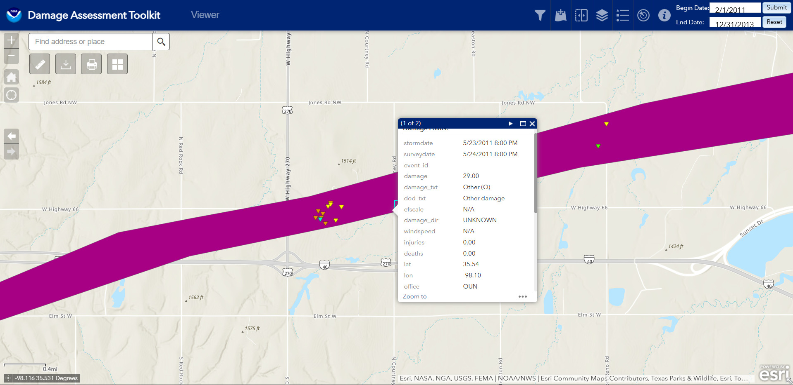
In the Enhanced Fujita Scale, there is a DI known as the Other DI. This is used for notable areas of damage that dont have specific DI's in the scale. Usually, its used when a tornado lofts large objects like storage tanks, crates, and other large objects, or when it hits a building or structure that isnt in the scale, like an oil rig. The image for this also differs from the regular upside-down triangles of the other DI's, as a blue circle is used. One of the more famous examples of this is the El-reno EF5 back in 2011, where it hit an oil rig, and on the DAT, NWS Normal used the Other DI to rate this tornado as an EF5.
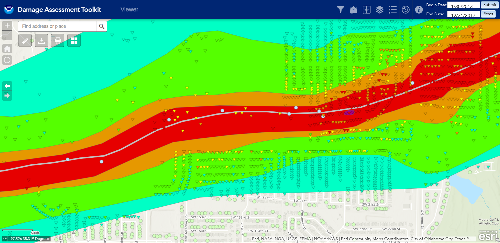
Another great example of this is the May 20th, 2013 Moore EF5, where it threw several oil tanks (originating from the Other DI on the left-most side on the image to the left) and tossed them quite a distance. In addition to these tanks, the one in the middle, by itself, is actually for severe ground-scouring. One of the cool things is that you can actually see these tanks on satellite data from right after the tornado, on google earth (if you want to download a KMZ file from my Google Earth Project here)!Contextual Damage
Violent tornadoes happen slightly more than you think. A few violent tornadoes are actually under-rated. How? Remember the EF scale is a Damage scale, not intensity/windspeed scale, only the damage the tornado inflicts is used to rate the tornado. When these under-rated violent tornadoes happen, its usually down to either the tornado happening in kansas, where the only thing it hit was a chaser trying to zero-meter (get as close as they can, slang term in storm chasing) and maybe a tree or two, or because the tornado only hit weakly built structures. The former usually happens in well, the midwest, and the later usually happens all over the place, but is most prevalent in Dixie Alley, where building codes are usually much more relaxed.
If we are lucky, our hypothetical under-rated violent tornado might hit a decently built house, with atleast some sort of anchoring. Lets use a house that has nails thats used to anchor the frame to the foundation, which on its own lets say earns it a 150mph EF3 rating using the FR12 DI. If our hypothetical tornado is strong enough, and lets say it is, and our house just so happens to be in a forest, full of trees, and has lots of shrubs and maybe even some heavy things, like a tractor, or a full oil tank, or for fun, lets say they have a train locomotive. If our tornado barrels through at its max intensity and destroys everything, Shredding the forest down to its trunks, and debarking them, and lets say it rolled our locomotive some distance. When our surveyors come, they will mostly just look at our EF3 150mph DI, and they might preliminarly rate it as EF3 150mph. However, they will also look the some of the intense damage, and they would feel much more confident in "upgrading" our 150mph FR12 DI to something higher, In most cases, it would only be a jump of about maybe 10-20mph, which is usually the case. So in our example, the surveyors might upgrade our tornado to be rated as a 160mph EF3, or even a Low-End (LE) EF4, somewhere under 180mph, but still above the 166mph threshold of the EF4 rating.
Thunderstorm Damage
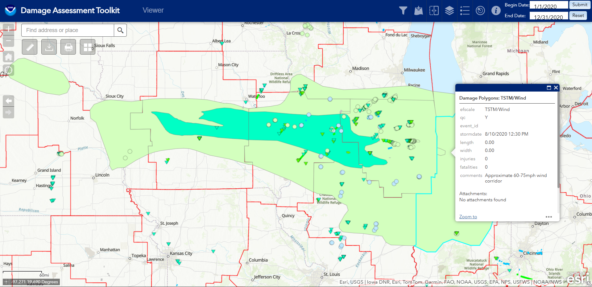
This classification is a generalization for straight line wind damage. It is used for straight line wind damage, as shown in the image beside, which is from the 2020 derecho in Iowa. On occasion, NWS offices also use this Classification to show non-tornadic damage in a storms path, such as RFD damage, or FFD damage. As stated earlier, this damage is non-tornadic, and is usually realtively weak, somewhere below the EF0 Threshold, or around EF0 windspeeds.Photo Examples
EFU
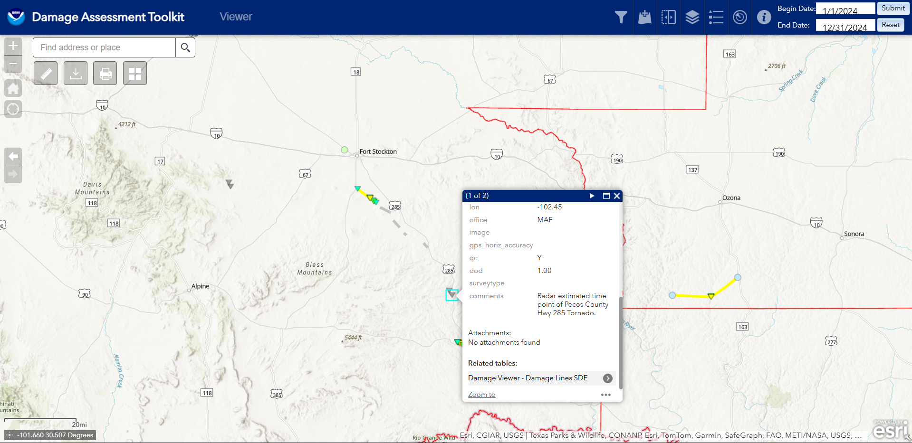
The EF-Unknown, or EFU for short, is typcally used when there is no damage-based evidence that a tornado happened, but there was video/photo evidence or lately, chaser livestreams, or if an NWS employee/trained spotter confirms a tornado. In addition, NWS Offices may also use this classification if they are unable to reach the damage and properly assess it. In recent years, especially in South-eastern Texas, the NWS offices have been using Chasers who livestream to confirm tornadoes that either don't have any damage, or are in places where its impossible to get to, or if they are legally not allowed to reach. One of the more recent examples of this is the Fort Stockton outbreak back in 2024 (pictured on the left), where the majority of tornadoes happened over cattle ranches, or just land where they couldnt access, but used Chaser feeds/photos/videos along with Radar data to plot and track these EFU paths. On the DAT, for the most part, these polygons, lines and DI's usually dont have any photos associated with them, hence the lack of a photo examples section.EF0
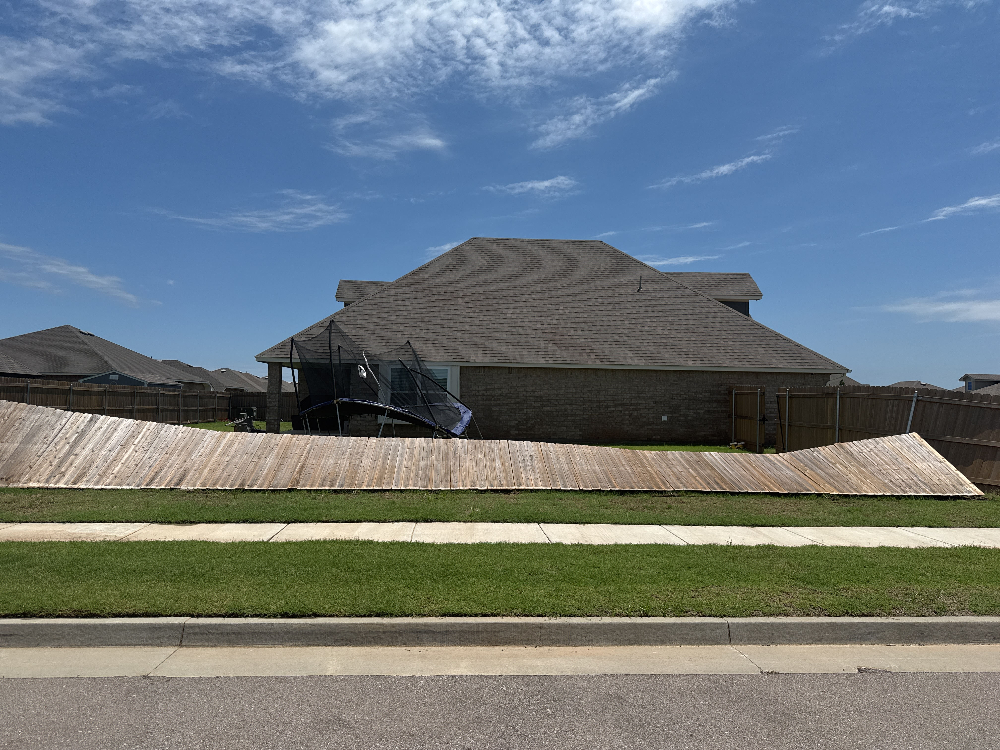
EF0 damage is where the "proper" rating starts, with specific Degree's of Damage (DOD), which are descriptions of damage to specific buildings, are now being used. EF0 damage is associated with estimated winds between 65mph to 85mph, otherwise known as relatively weak winds. In the scale itself, damage is described as being minor damage, with well-built (strong) houses typically unscathed, sometimes with shattered windows, and in other houses, minor damage to roofs and chimneys. Large signs and bilboards. Trees can have branches broken and shallow-rooted trees can be up-rooted. As seen on the image on the left, fences can be pushed over, and trampolines, and other small objects, can be thrown some distance away. Now you might think that this damage would be pretty hard to differentiate between regular thunderstorm wind damage right? Actually its really easy to tell, by using the way the debris falls. If the debris falls all pointing in the same direction, thats probably due to linear winds, but if they fall in like a spring or a slinky kind of way (spiriling about a point on a line), then thats tornadic damage! Usually its hard to tell from just one photo, like the one on the left, but these surveyors are well-seasoned and have greater context clues, they know what they are looking for!Photo Examples
EF1
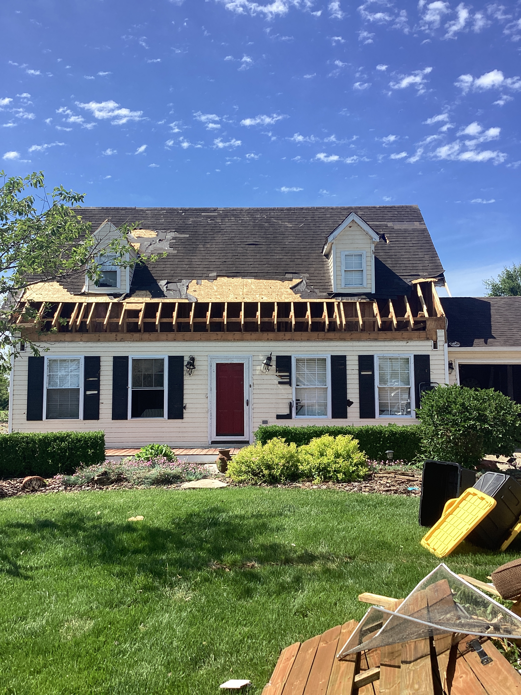
EF1 level damage has winds estimated between 86mph and 110mph. In the scale, the damage is described as moderate damage. Damage to mobile homes and other temporary structures becomes significant, and cars and other vehicles may be pushed off the road and/or flipped, permanent structures can suffer major damage to their roofs. Essentially, the damage is still weak, but starts to differentiate more between the "weak" linear wind damage and EF0 damage. EF1's also represent about one-third of all the tornadoes. On the image on the left, we can start to see more roof damage, along with damage to shingles and shudders, windows can be blown out, and some doors blown open. I've personally seen sheds and detatched garages flattened in these weak tornadoes, making them one of the worst places, other than running at a tornado, to be during a tornado.Photo Examples
EF2
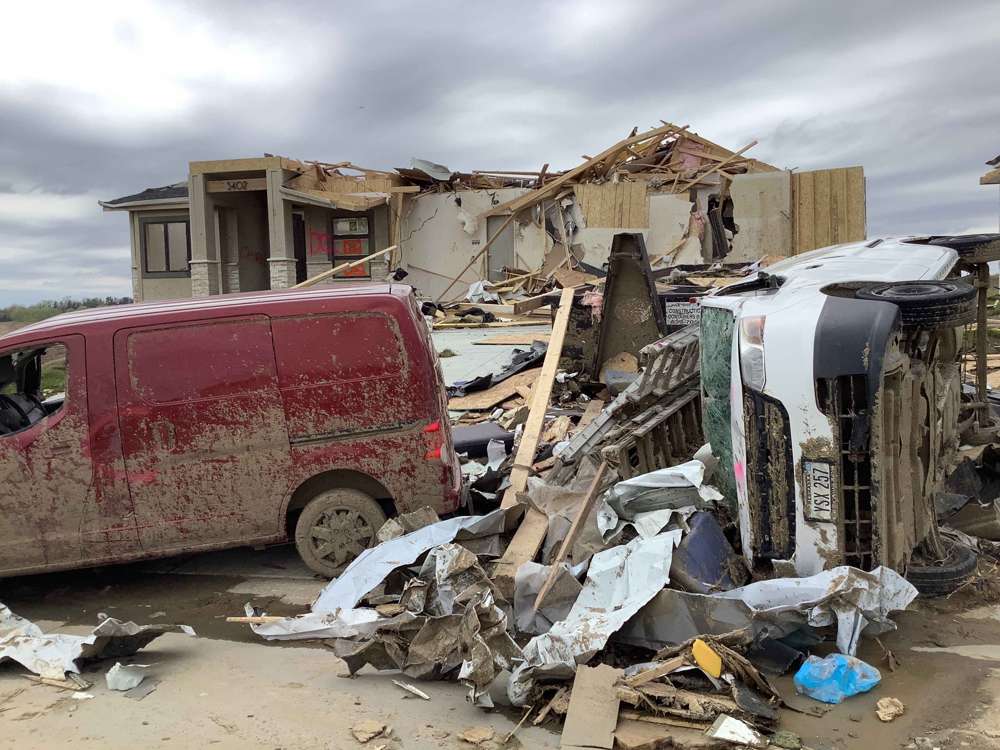
EF2 level damage has winds estimated between 111mph and 135mph. In the scale, the damage is described as considerable damage. Well-built structures can suffer serious damage, including roof loss, and the collapse of some exterior walls may occur in poorly built structures, mobiles homes are destroyed, vehicles can be lifted off the ground and lighter objects can become missiles, causing damage outside the tornadoes main path, wooded areas have large portions of their trees snapped or uprooted. EF2's are what we start to call "significant tornadoes", where they pose a serious threat to the lives of people in any place, not that EF0's and EF1's aren't deadly (some are), but we mainly use this name really only in SPC outlooks and Mesoscale Discussions ("posts" that the SPC put out for a given area right before, or during, a severe outbreak, usually along the lines of "Significant Tornado On-going",etc) In my personal experiences, I have seen entire houses blow apart in an EF2, and in some cases, cars even being thrown.Photo Examples
EF3
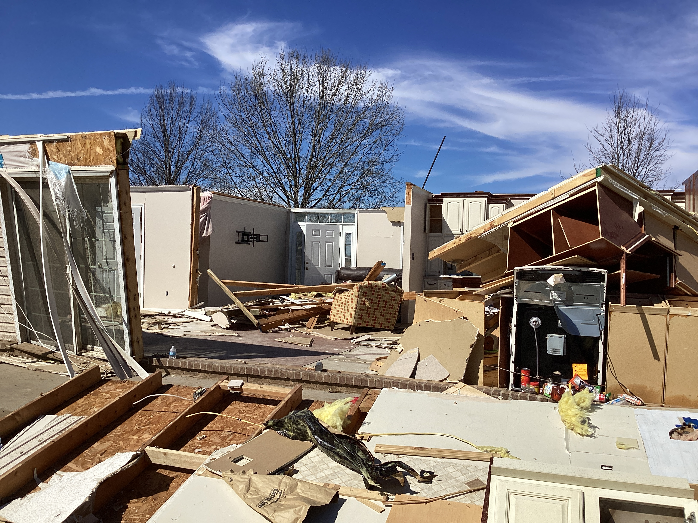
EF3 level damage has winds estimated between 136mph and 165mph. In the scale, the damage is described as severe damage. A few parts of affected buildings are left standing, Well-built structures lose all outer and some inner walls, Unanchored homes are swept away, and homes with poor anchoring may collapse entirely, Trains and train cars are all overturned, Small vehicles and similarly sized objects are lifted off the ground and tossed as projectiles, Wooded areas suffer an almost total loss of vegetation and some tree debarking may occur. EF3's are where we start to see homes completely destroyed, and no more debris on the foundation, although this is only for homes where there is no, or poor, anchoring to the foundation. This has a nickname, a Slabbed Home, or a tornado "slabbed" houses. Essentially this is just saying that the tornado destroyed the house to the point where the only thing thats left is just the foundation. In my personal experience, EF3 can range from just a roof gone, to the entire house gone. And you can get some really weird DI's too, one of the craziest I can remember is from on in Oklahoma, where the two sides of the house have the walls standing, and the center of the house is gone, like a bulldozer went through the center. If I remember correctly, it was rated as a mid-range (~145mph to 150mph) EF3.Photo Examples
EF4
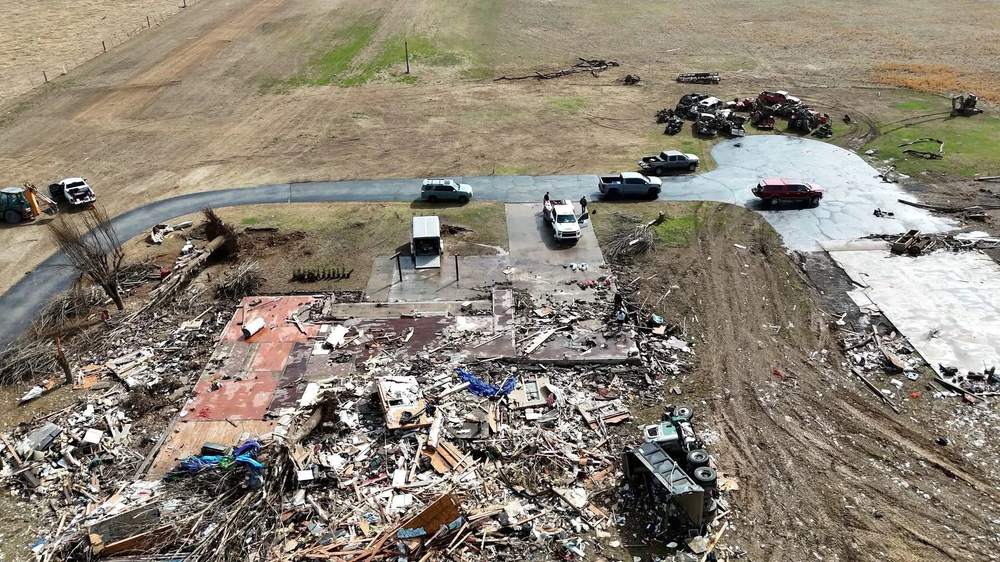
EF4 level damage has winds estimated between 166mph and 200mph. In the scale, damage is described as devastating damage. Well-built homes are reduced to a short pile of medium-sized debris on the foundation, Homes with poor or no anchoring are swept completely away, Large, heavy vehicles, including airplanes, trains, and large trucks, can be pushed over, flipped repeatedly, or picked up and thrown. Large, healthy trees are entirely debarked and snapped off close to the ground or uprooted altogether and turned into flying projectiles, Passenger cars and similarly sized objects can be picked up and flung for considerable distances. EF4 tornadoes are when we start to label them as Violent tornadoes. At this point of the scale, the difference between the EF4 and EF5 becomes more vague, something I will touch on later. EF4's are exceptionally rare, usually we might see one or two in an active year. In 2025, we saw 5 EF4's, and 3 of those happened in a 2 day span. In 2024, there were 4 EF4's, making the last couple of years one of the more intense, rating wise. I have personally see EF4's reduce entire neighbourhoods into pieces. They also produce missiles out of any that isn't directly bolted to the ground. Trains have been thrown in some (sometime under-rated) EF4's, other times they have been rolled. EF-4's can also produce some wild DI's. They can range from entire forests being blown apart, looking like a bomb went off. Or in Arkansas, back in 2011, a violent tornado hit a home and earned an EF4 rating, The photo that comes with the rating shows a house with pretty much all its internal walls standing, turns out the home was built with metal truces, and could probably survive a nuke. I joke with one of my friends who lives in the state that the houses there could either be built to stand forever, or fall into pieces when an EF-2 hits them. One of my favourite DI's is also an EF4 rating. It comes from the 2011 Chickashaw EF4 (though I whole-heartedly believe it should have been rated an EF5), where it had hit a unique kind of DI, a tornado dome house. The photo that comes along with the DI looks like it was taken on mars. Both of these DI's will be shown below.Photo Examples
EF5
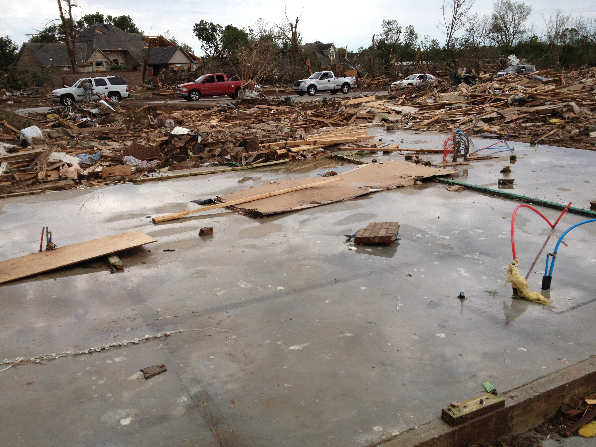
EF5 level damage has winds estimated to be over 201mph. In the scale, damage is described as incredible damage. Well-built and well-anchored homes are swept cleanly off their foundations and obliterated. Large, steel-reinforced structures such as schools are completely leveled. Low-lying grass and vegetation are shredded from the ground. Trees are completely debarked and snapped. Very little recognizable structural debris is generated with most materials reduced to a coarse, dispersed mix of small, granular particles. Large, multiple-ton steel frame vehicles and farm equipment are often mangled beyond recognition and tossed miles away or reduced entirely to unrecognizable parts. Tall buildings collapse or suffer severe structural deformation. EF5's are the strongest tornadoes on Earth. They make up only 0.05% of all tornadoes in the US. They are one of the most destructive tornadoes on earth, and contain the highest windspeeds on the planet. The way people describe the damage are also one of the "scariest", with Peco's Hank describing it as "there is nothing to see, because nothing is there". Some of these EF5's can also get their ratings through "unconventional" ways. One of the more famous examples would be the 2011 El-reno EF5, where it got its rating after impacting an oil drilling rig at its peak intensity, moving the 2 million pound rig. Or more recently, the Enderlin ND EF5, which threw several full train cars, and one empty train car a distance away, and with some calculations, and a research paper that was released in 2024, it was rated an EF5. In my personal experience, EF5's can do some insane damage, they can leave literal trenches into the ground from the shear pressure drop, and they can destroy a house and leave no trace that it existed, other than a damage foundation. Even in some cases, the foundation can be heavily damage, or ripped apart in some cases. EF5's are one of the rarest tornadoes in existance, with only a dozen or so EF5's since 2007, and as mentioned earlier, make up 0.05% of all tornadoes.Photo Examples
EF6?
IF you ever hear someone start talking about an EF6 or greater, they're lying, no official document mentions the EF6, nor does it exist. Recall that an EF5 has estimated winds of 201mph or greater. What they could be mistaking it for is the F6 in the Fujita scale, which was never used officially. Back when Ted Fujita was working on his new scale, he conceived of tornadoes being rated higher than an F5, and ratings higher than that were on the scale at one point, but later removed, as he found it unreasonably to have a category for tornadoes with windspeeds of over 400mph. Only a handful of tornadoes were even considered to be rated an F6, a few from the 1974 super outbreak, such as the Xenia OH F5, but were never officially rated F6.
Controversies of the Enhanced Fujita Scale
Since the rating of the tornado is based HEAVILY on the surveyors interpretation, many problems can arise. From an office to office basis, or even survey to surveyor, different interpretations can cause essentially the same tornado be rated under two different levels/classifications. This is especially prevalent in EF4 and EF5 tornadoes, and occasionally if an EF3 tornado should be rated EF4 or not. Nothing is more apparent than the years between the 2013 Moore EF5 and the 2025 Enderlin EF5, where we saw countless EF4's nearly be rated EF5, but never were. It was only when an office, which had never rated an EF5 before, and hardly had experience with EF4's, took the "gamble" on rating a tornado an EF5.
This difference in how surveyors think a tornado does "EF5 worthy" damage is one of the major problems, and controversies, in the current EF scale, and is supposedly being imrpoved and/or fixed in the newest iteration. However, one of the best examples of this differenced happened back on April 27th, 2011 (look at the STP's!). During the rating of the Tuscaloosa EF4, one of the places impacted was an apartment building, with a house/house turned into a clubhouse.. The apartment building itself was greatly impacted, with parts of the upper levels of the building completely gone, and the "house", which was a well-anchored home, was mostly swept away. 3 different teams we used to help rate this part of the damage path. 2 of them concluded it was EF4 damage, where the other concluded EF5 damage. This discrepancy is what is wrong with the scale, mostly still due to the lack of an in-depth description on what the difference between EF4 and EF5 damage is.
The EF scale had originally meant to try to get rid of this discrepancy, that was notorious in the F scale, but with how they were re-doing the scale, it only meant new issues would arise.
Classes of Damage (Canada)
(Unfinished) Here in Canada, we use the EF scale a bit differently. Our version, the CEF scale, is a tweaked version of the EF scale, with slightly adjusted windspeeds for each category, and we don't use the EFU category, as we Default to a EF0 90km/h (50mph) rating instead. We also use our scale to rate downbursts, something that Ted Fujita himself did with his Fujita scale. So essentially, our scale is more than just a tornado damage scale.
Other Scales
(unfinished) Around the globe, different countries use some different scales, or older scales like the Fujita Scale.